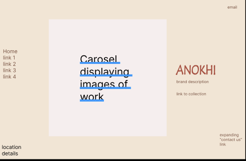

Anokhi is more than just a brand.
It’s a story, a craft, a legacy.
The Challenge
- Anokhi’s current website doesn’t reflect its essence.
- Navigation is clunky.
- Content feels scattered.
- Users struggle to feel the brand’s warmth.
Where I’m Headed
I’m redesigning with intention.
A digital space that breathes authenticity — where thoughtful UI/UX brings Anokhi’s soul to life.
To create a design that feels intentional, it was important to first understand what wasn't working.
Disconnected Storytelling
The site doesn't weave a cohesive narrative. The brand's essence — its people, process, and heritage — feels fragmented.
Fragmented content across pages disrupts storytelling.
Ineffective Visual Hierarchy
Typography, color, and layout don’t guide the user. Key moments feel lost in the clutter.
Frustrating User Flow
Navigation is unintuitive. Important content is buried, and users are left guessing where to click next.
Hierarchy: Poor layout and inconsistent sizing dilute emphasis.
Flow: Redundant menus and unclear paths hinder exploration.
Mobile Experience
While the website is technically responsive, it lacks mobile-first finesse. Content feels crammed or oversized, touch targets are inconsistent, and layouts don’t translate smoothly across devices. The experience doesn’t carry the same elegance or ease that defines Anokhi’s brand.
Elements feel disproportionate and clunky on smaller screens.

Laptop mockup: full layout and navigation flow

Tablet mockup: adaptive layout with elegant spacing

Mobile mockup: collapsible sidebar and simplified buttons
Moodboard: Jaipur-inspired tones, type, and textures
Design Rationale
The color palette draws directly from Anokhi’s identity — earthy reds, deep indigos, and warm neutrals — all reflective of Jaipur’s vibrance and craft heritage.
Buttons are kept simple and text-based to retain clarity and elegance, avoiding anything overly graphic or modern.
Typography was chosen to echo tradition with restraint — no need for a graphic logo when the name and form speak for themselves.
final website can be found at:
https://lordkariri.github.io/anokhi_redesign/
Desktop view with carousel and refined layout
Tablet experience preserving elegance and clarity
Mobile view with collapsible sidebar and simplified nav
Design Decisions
To create a smoother and more immersive browsing experience, I introduced a carousel component that replaces static image blocks — making the site feel less clunky and more dynamic.
The background pattern was chosen to echo the visual identity of Anokhi’s handcrafted textiles — tying the digital design back to the brand’s artistic roots.
I streamlined the navigation by reducing links to only the most relevant pages, helping users focus and reducing decision fatigue.
On smaller screens, the navigation transforms into a collapsible sidebar, ensuring usability while preserving space.
A more consistent color scheme brings harmony across pages and creates a recognizable visual language.
Typography, spacing, and layout were all refined with intent — ensuring a balance of whitespace and readability that reflects the care Anokhi puts into its designs.